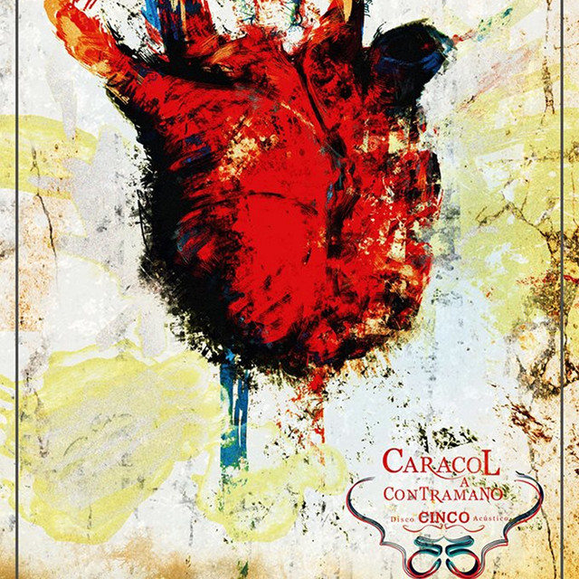

|
No disponible |
- Lucas Serena: Teclado, trombón, piano, guitarra, voces
- Marcelo Fontana: Voz, guitarra, accesorios
- Gonzalo Rogati: Guitarra
- Luciano Menez: Bajo
- Pablo Bohl: Saxo
- Santiago Rogati: Batería
|
01/01/2010 |
- Demente
- Vida a bordo
- Activar
- Costas frias
- El alba
- Gózalo
- La pelota
- Quien conoce a cuchufo
- Sangre sobre el mar
- Sin cuerda
- Todas esas fiestas
- Todas las putas
- Viento Sur
- Vocales
|
|  |
No disponible |
- Lucas Serena: Teclado, trombón, piano, guitarra, voces
- Marcelo Fontana: Voz, guitarra, accesorios
- Gonzalo Rogati: Guitarra
- Luciano Menez: Bajo
- Pablo Bohl: Saxo
- Santiago Rogati: Batería
|
01/10/2013 |
- El rey
- Las canciones
- Freno
- Si no te dejas caer
- Sin pensar
- Tan lejos
- Pregunte
|
 |
- Producción general: Caracol a Contramano
- Producción artística: Marcelo Serena, Caracol a Contramano
- Ilustración: Matias Paradela
- Diseño gráfico: Matias Paradela
- Fotografía: Jonatan Cerri
- Técnico de grabación: Hernán Grasso
- Técnico de mezcla: Lucas Serena
- Asistentes de mezcla: Marcelo Fontana, Marcelo Serena
- Grabado en estudios ION
- Masterizado por Andrés Mayo con asistencia de Felipe Alvarez de Toledo en Andrés Mayo Mastering & Audio Post
|
- Lucas Serena: Teclado, trombón, piano, guitarra, voces
- Marcelo Fontana: Voz, guitarra, accesorios
- Gonzalo Rogati: Guitarra
- Luciano Menez: Bajo
- Pablo Bohl: Saxo
- Santiago Rogati: Batería
|
01/04/2015 |
- Cuerpo y mente
- Como quieras
- Noche
- Cambio la suerte
- Calle
- Paralelepípedo
- Ya se que sos rocanrol
- Chala
- Habla de mas
- Febrero
- Hoy
- Tarola
|
 |
- Estudio: Sonorámica
- Producción artística: Marcelo Serena
- Grabación y mezcla: Hernán Grasso
- Master: Carlos Laurenz
- Dirección fotográfica: Jonathan Cerri
- Cámaras: Jonathan Cerri, Ignacio Paloma
- Edición: Ignacio Paloma
|
- Lucas Serena: Teclado, trombón, piano, guitarra, voces
- Marcelo Fontana: Voz, guitarra, accesorios
- Gonzalo Rogati: Guitarra
- Luciano Menez: Bajo
- Pablo Bohl: Saxo
- Santiago Rogati: Batería
|
20/09/2017 |
- Desencanto
- Baila como puede
- Pala
- Ska
- Que la siga
- Átomos
- Casa
- Agua te pido
- Atún
- Estar de pie
|